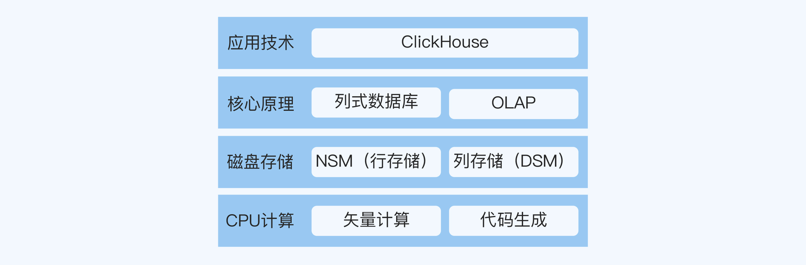

放学别走 | 如何画好领域分层图？
你好，我是华仔。
在第19讲中，我为你介绍了用于提升技术深度的链式学习法。链式学习法的第一步，就是要明确一项技术的深度可以分为哪些层，并画出领域分层图和细节分层图。
其中细节分层图基本上可以按照固定的模板去画（接口设计、设计原理、设计方案和实现源码），但是领域分层图并没有统一的模板，因为不同技术领域的分层方式可能会有很大差异。
我之前没有详细讲解领域分层图的画法，而是跟你说“尝试画图本身就是一个梳理结构、强化认知的过程”。
因为我想强调的是：画图本身的技巧和效率并没有那么重要，对你成长帮助最大的，是为了画出这张图而去整理、思考和探索的过程。
不用担心画得不准确
你可能会担心，如果领域分层图画得不准确怎么办？
首先，领域分层图本来就是需要迭代优化的，很少有人一开始就能画得非常准确。
实际的情况是，你先画一个初稿，然后通过整理、思考和探索，对相关技术的理解更加深刻和全面，发现原来存在的一些问题，比如分层关系不合理、某一层遗漏了一些技术点等，然后再进行修改，经过不断地迭代优化，最终得到比较准确的版本。
其次，领域分层图就算画得不够准确，你学习的过程也没有白费。
一般情况下，你不会错得太离谱，你学到的内容就算跟当前想学的技术关联没有那么强，但下次提升另一项技术的深度时，很可能就用上了。而且随着你积累的经验越来越丰富，以后再画领域分层图的时候就会越来越熟练。
当然，你可能过几个月就要参加晋升了，没有多少时间用来慢慢试错迭代；或者你真的对自己的探索能力没什么把握，必须掌握一个具体可靠的画图方法才能放心。
考虑到这些情况，这一讲我就分享一下画领域分层图的具体经验吧。
拿来主义
最简单的方法当然就是拿来主义，你可以找团队内部熟悉某项技术的高手来帮你画，也可以根据网上搜到的相关文章或者思维导图来整理。
这种方法的好处是耗时少，也不会走偏，但是它也有缺点。
首先，你自己的理解深度还是不够，因为你缺少了自己去探索的过程。
其次，对外界的依赖太高，你并不是刚好每次都能找到这样的高手，而网上的资料也存在不完整、老旧过时甚至错误的风险。
最后，这种方法往往只适合热门、成熟的技术领域，而对于冷门、新兴的技术领域，你能拿来的内容非常少，还是得靠自己去产出。
画领域分层图的步骤
那么，假设你对某个技术完全不了解，团队里也没有人熟悉，在网上又只能找到非常基础的资料，这个时候，你要怎么画领域分层图呢？
以下是我最近学习ClickHouse时的画图过程，供你参考。
第一步，搜集资料。
有官方文档的情况下，先看官方文档是最保险的，比如我看的就是ClickHouse的英文官方文档，它已经很全面了。
你可能会有疑问，如果我想学的技术不像ClickHouse这样有比较成熟的官方文档，该怎么办呢？
我的想法是，成熟的项目一定有成熟的文档。如果一个项目没有官方文档或者官方文档很烂，只能靠你自己看代码去摸索，那么我建议你先不要去学。
首先，这样学效率太低了；其次，这说明项目本身就有问题，要么是还不成熟，容易误导你，要么就是没什么人维护，出了问题也没人管你，无论哪种情况你都很容易踩坑。
当然，不同的学习对象有不同形式的资料，但不管什么类型的资料，我推荐你首先都要看权威资料，包括官方文档、经典书籍、研究论文等，比如ClickHouse的官方文档、《UNIX环境编程》《TCP/IP详解》和谷歌的大数据论文等，都属于各自领域的权威资料。
第二步，挖掘技术点。
我根据官方文档中的内容，挖掘出了一些相关的技术点。
ClickHouse® is a column-oriented database management system (DBMS) for online analytical processing of queries (OLAP).
Why Column-Oriented Databases Work Better in the OLAP Scenario？
Column-oriented databases are better suited to OLAP scenarios: they are at least 100 times faster in processing most queries.
这两段话涉及两个技术点，列式数据库（Column-Oriented Database）和OLAP。
There are two ways to do this:
- A vector engine. All operations are written for vectors, instead of for separate values. This means you don’t need to call operations very often, and dispatching costs are negligible. Operation code contains an optimized internal cycle.
- Code generation. The code generated for the query has all the indirect calls in it.
而这段话又涉及两个技术点，矢量计算（Vector）和代码生成（Code Generation）。
你可以看到，光是简单的一篇ClickHouse介绍文档，我已经挖掘出了至少4个关联的技术点。
第三步，针对技术点学习。
比如你已经挖出了列式数据库这个技术点，但是没有相关的积累，那么你可以立刻开始先学跟它相关的内容，也可以初步看完ClickHouse的资料之后再来学习。具体采用哪种方式，根据你的个人习惯来选择就行了。
我看到列式数据库这个技术点之后，就在网上找到了一篇不错的文章，里面又引出了HBase、NSM、DSM等相关的概念。当然，只看这一篇文章肯定是不够的，我会结合多篇资料，最后形成综合的理解。
第四步，画出初稿。
学习了解了这些重要的技术点之后，我尝试整理了ClickHouse领域分层图的初稿，如下所示：

第五步，迭代优化。
你可能会觉得这张图好像比较简单。不过没关系，在阅读资料和思考的过程中，我会继续迭代优化这张图，比如之后还可能加上矢量计算相关的CPU结构。
即使是这张简单的领域分层图，内容已经足够我学上几个星期了，我会以这张图为基础先开始学，学习的过程又会拓展我对这个领域的认识，促使我继续迭代优化。
当我把图片上的内容学完之后，我可以通过培训的方式给团队讲解ClickHouse，回答他们的疑问，借助群众的力量来帮助自己加深理解，进一步迭代优化这张图。
小结
现在，我们回顾一下这一讲的重点内容。
- 画领域分层图的技巧和效率并没有那么重要，对你成长帮助最大的，是为了画出这张图而去整理、思考和探索的过程。
- 画领域分层图最简单的方式是拿来主义，找团队内部熟悉某项技术的高手来帮你画，或者根据网上搜到的相关文章或者思维导图来整理。
- 如果拿来主义不能满足你的需求，或者你对自己有更高的要求，可以通过5个步骤来画领域分层图：搜集资料，挖掘技术点，针对技术点学习，画出初稿，迭代优化。
思考题
这就是今天的全部内容，最后留一道课后思考题给你吧。参考这一讲的方法，你能够把自己最近想提升的一项技术的领域分层图画出来吗？
你可以用文字的形式在留言区分享出来，让我来帮你把把关。相信经过深度思考的回答，也会让你对知识的理解更加深刻。